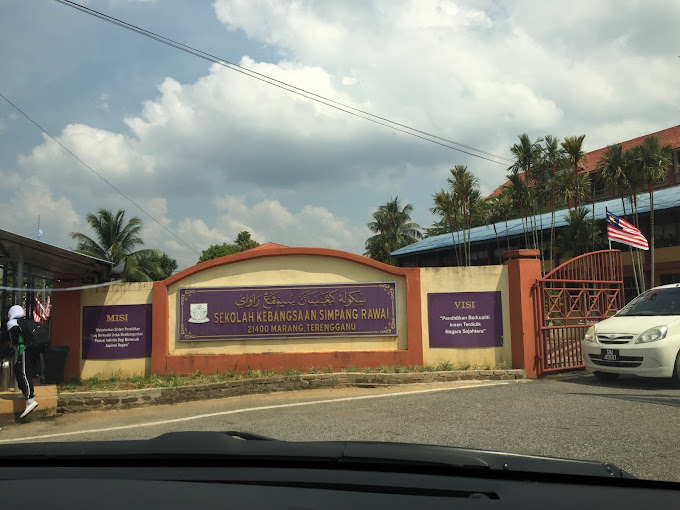
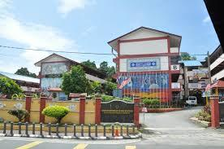
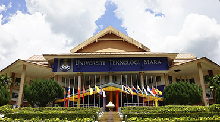

Pasti Al-Husna, Marang, Terengganu
2009-2010
My kindergarten school is Pasti Al-husna, situated in Marang,Terengganu. It is a well-known Islamic preschool that focuses on providing both academic and religious education to young children.
Sekolah Kebangsaan Simpang Rawai, Marang, Terengganu
2011-2016
My primary school was SK Simpang Rawai, located in Terengganu, Malaysia. It was a wonderful place where I built the foundation of my education and cherished many unforgettable memories with my teachers and friends.
Sekolah Menengah Agama Khairiah, Kuala Terengganu, Terengganu
2017-2021
My secondary school is SMA Khairiah, located in Terengganu, Malaysia. It is an Islamic school that emphasizes both academic excellence and religious education. The school provides a balanced curriculum that integrates Islamic studies with modern subjects like science, mathematics, and languages. The environment is disciplined yet supportive, encouraging students to excel academically and spiritually. SMA Khairiah is well-known in the region for producing students who excel in both their academic and moral development. I am proud to be a part of this institution as it shapes us into responsible and knowledgeable individuals
Universiti Teknologi Mara Kampus Machang Cawangan Kelantan
2022-2025
I am currently studying at UiTM Machang, located in Kelantan. I am pursuing a Diploma in Information Management which has been an exciting and enriching experience. My program covers a range of subjects that help me build both theoretical knowledge and practical skills relevant to my field. The campus provides a supportive environment with dedicated lecturers, excellent facilities, and opportunities for personal and academic growth. I enjoy being part of UiTM Machang's vibrant student community, participating in activities and events that enhance my learning experience. My time here is helping me prepare for a successful career in the future